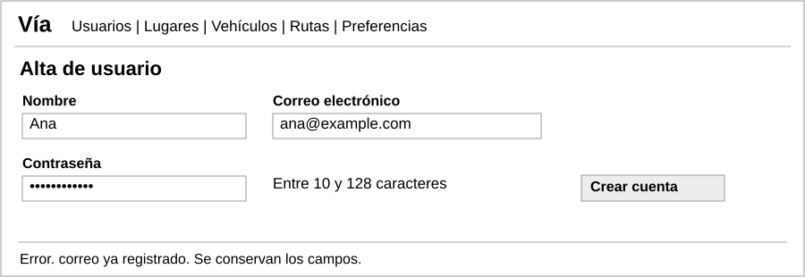
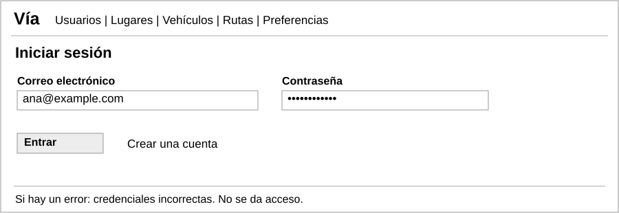
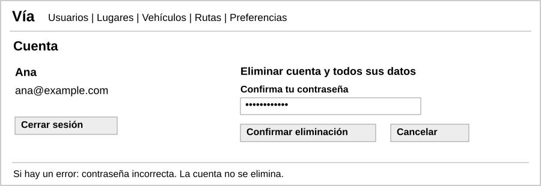
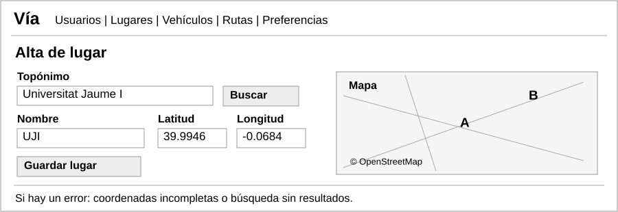
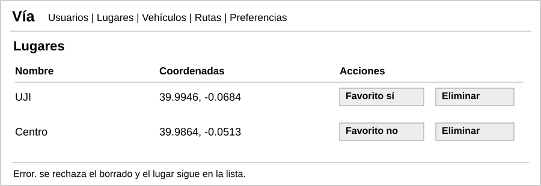
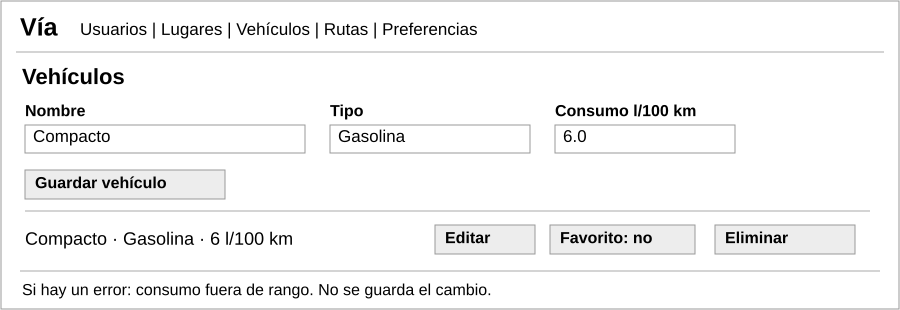
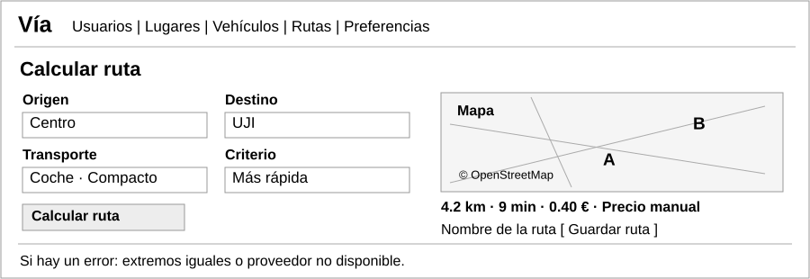
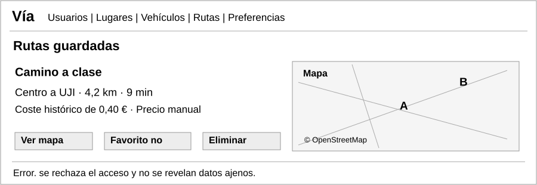
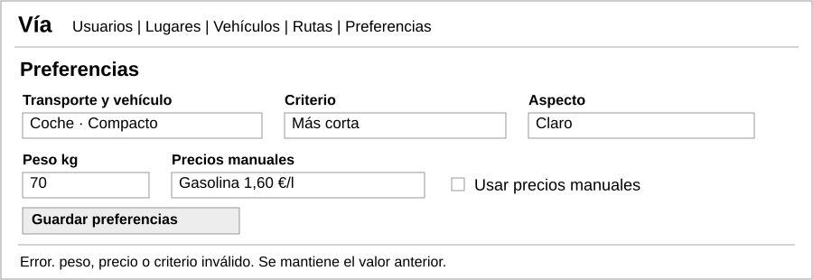

Nueve pantallas sencillas. Son propuestas de interfaz. Las cifras son ejemplos.
HU-01

HU-02

HU-03 y HU-04

HU-05, HU-06 y HU-09

HU-07, HU-08 y HU-22

HU-10 a HU-13 y HU-22

HU-09 y HU-14 a HU-19

HU-20 a HU-22

HU-15 a HU-17, HU-23 y HU-24
